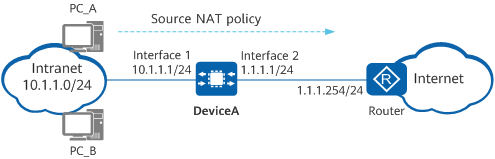

Example for Configuring Easy IP for Intranet Users to Access the Internet
Networking Requirements
An enterprise has deployed DeviceA at the intranet border. This public IP address is assigned to the WAN interface of DeviceA so that it can communicate with the ISP router, which is an access gateway on the ISP network. To allow intranet users on the 10.1.1.0/24 network segment to access the Internet, you need to configure a source NAT policy in Easy IP mode on DeviceA. This policy allows DeviceA to translate private IP addresses of intranet users into the public IP address of the outbound interface (the WAN interface of DeviceA) of user packets. Figure 1 shows the network diagram, in which the router is the access gateway provided by the ISP.

In this example, interfaces 1 and 2 represent 10GE 0/0/1 and 10GE 0/0/2, respectively.

Item |
Data |
Description |
|
|---|---|---|---|
10GE0/0/1 |
IP address: 10.1.1.1/24 |
Set the default gateway address on each intranet host to 10.1.1.1. |
|
10GE0/0/2 |
IP address: 1.1.1.1/24 |
1.1.1.1/24 is a public address provided by the ISP. |
|
Private network segment allowed to access the Internet |
10.1.1.0/24 |
- |
|
Default route on DeviceA |
Destination address: 0.0.0.0 Next-hop address: 1.1.1.254 |
Configure a default route to the Internet on DeviceA, enabling it to forward traffic from the intranet to the ISP router. |
|
Configuration Roadmap
- Configure IP addresses for interfaces, enabling network connectivity. In addition, enable the NAT function on 10GE 0/0/2.
- Configure a default route on DeviceA, enabling it to forward traffic sent from intranet users to the ISP router.
- Configure a source NAT policy in Easy IP mode on DeviceA, enabling it to translate source private IP addresses of the packets sent from intranet users to the Internet into the public IP address of the outbound interface.
Only the easy-ip parameter needs to be specified in a source NAT policy. DeviceA will automatically discover the outbound interface address based on routing information.
- Configure the default gateway address on each intranet host, enabling them to send traffic destined for the Internet to DeviceA.
Procedure
- Configure IP addresses for interfaces, enabling network connectivity. In addition, enable the NAT function on 10GE 0/0/2.
# Configure an IP address for 10GE 0/0/1.
<HUAWEI> system-view [HUAWEI] sysname DeviceA [DeviceA] interface 10ge 0/0/1 [DeviceA-10GE0/0/1] undo portswitch [DeviceA-10GE0/0/1] ip address 10.1.1.1 24 [DeviceA-10GE0/0/1] quit
# Configure an IP address for 10GE 0/0/2 and enable the NAT function on this interface.
[DeviceA] interface 10ge 0/0/2 [DeviceA-10GE0/0/2] undo portswitch [DeviceA-10GE0/0/2] ip address 1.1.1.1 24 [DeviceA-10GE0/0/2] nat enable [DeviceA-10GE0/0/2] quit
- Configure a default route on DeviceA, enabling it to forward traffic sent from intranet users to the ISP router.
[DeviceA] ip route-static 0.0.0.0 0.0.0.0 1.1.1.254 - Configure a NAT policy in Easy IP mode.
[DeviceA] nat-policy [DeviceA-policy-nat] rule name policy_nat1 [DeviceA-policy-nat-rule-policy_nat1] source-address 10.1.1.0 24 [DeviceA-policy-nat-rule-policy_nat1] action source-nat easy-ip [DeviceA-policy-nat-rule-policy_nat1] quit [DeviceA-policy-nat] quit
- Configure the default gateway address on each intranet host, enabling them to send traffic destined for the Internet to DeviceA. The detailed configuration process is not provided here.
Verifying the Configuration
- Verify that intranet PCs can access the Internet.
- Run the display nat-policy rule name rule-name command on DeviceA to check the number of times traffic matches the source NAT policy.
- Check for the session entries with the source addresses being the private addresses of intranet PCs. If such an entry is found and the post-NAT IP address is the public IP address of the WAN interface, the NAT policy has been configured successfully.
<DeviceA> display session all verbose Session Table Information: Protocol : 6(TCP) SrcAddr Port Vpn : 10.1.1.3 2474 DestAddr Port Vpn : 3.3.3.3 80 Time To Live : 60s NAT Info New SrcAddr : 1.1.1.1 New SrcPort : 3761 New DestAddr : - New DestPort : - Total : 1
Configuration Scripts
# sysname DeviceA # interface 10GE0/0/1 ip address 10.1.1.1 255.255.255.0 # interface 10GE0/0/2 ip address 1.1.1.1 255.255.255.0 nat enable # ip route-static 0.0.0.0 0.0.0.0 1.1.1.254 # nat-policy rule name policy_nat1 source-address 10.1.1.0 mask 255.255.255.0 action source-nat easy-ip # return